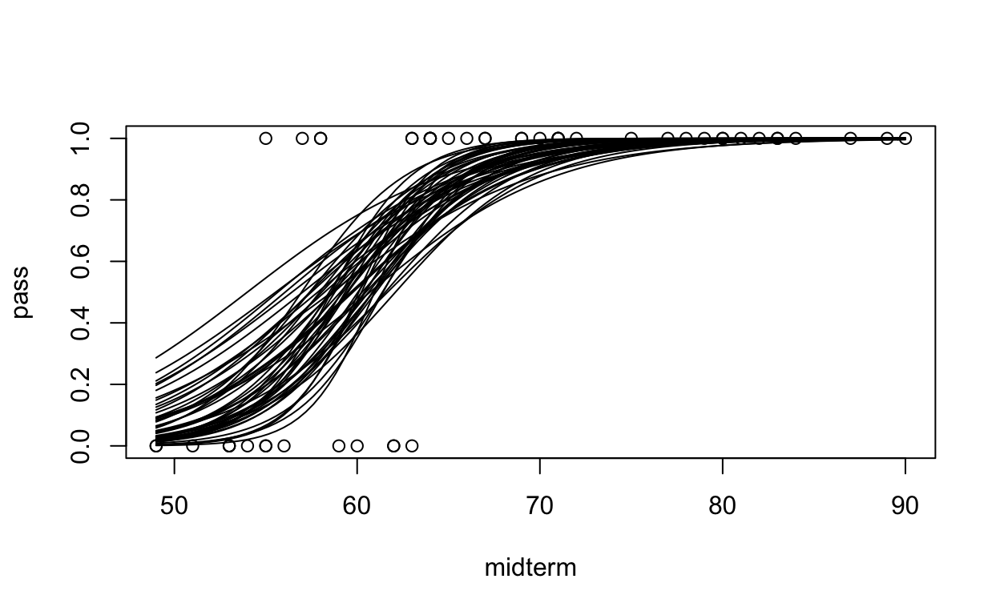

Logistic Regression, Gelman Chapter 13 , 14
Worked with Ben, Nathaniel and Noah
Question A. What is a logit function and what is its role in logistic regression?
Answer A The logit function maps the range (0,1) to (−∞, ∞) and is useful for modeling probabilities (RaOs). In logistic regression, this function is used to predict dependent variables that are binary instead of continuous. Rather than using log transformation, researchers use logistic regressions to keep information intact and predict in terms of probabilities as opposed to expected values which may go beyond 1 and below 0.
B. Why do researchers typically not just use ordinary least squares regression (rather than logistic regression) when modeling a binary (dichotomous) response variable?
Answer B A linear regression will usually go below zero and above one, giving us lines rather the the S shaped curve. In the case of binary response/dependent variables, we’re mostly interested in the chance/ probability/ true or false/ 0 or 1 and the s shaped curve seems to be move intuitive because they don’t go beyond 0 and 1.
C.What is the inverse logit function? How can it be used to interpret results from a logistic regression?
Answer C The inverse logit function logit−1(x) = ex 1 + ex. transforms the log of odds that we usually get with a regression to the probability in terms of 0s and 1s i.e. the transformation from linear predictors to probabilities used in a logistic regression. (Ra OS)
D.Explain equations 13.2 and 13.3 on RaOS page 219 and the relationship between them.
Answer D
The folder NES contains the survey data of presidential preference and income for the 1992 election analyzed in Section 13.1, along with other variables including sex, ethnicity, education, party identification, and political ideology.
Fit a logistic regression predicting support for Bush given all these inputs. Consider how to include these as regression predictors. (no interactions)
Evaluate and compare the different models you have fit.
For your chosen model, discuss and compare the importance of each input variable in the prediction.
#Load the data
nes <- read.table("nes.txt")
head(nes)
year resid weight1 weight2 weight3 age gender race educ1 urban
536 1952 1 1 1 1 25 2 1 2 2
537 1952 2 1 1 1 33 2 1 1 2
538 1952 3 1 1 1 26 2 1 2 2
539 1952 4 1 1 1 63 1 1 2 2
540 1952 5 1 1 1 66 2 1 2 2
541 1952 6 1 1 1 48 2 1 2 2
region income occup1 union religion educ2 educ3 martial_status
536 1 4 2 1 1 3 3 1
537 1 4 6 1 1 1 1 1
538 1 3 6 2 2 3 3 1
539 1 3 3 1 1 2 2 1
540 2 1 6 2 1 4 4 1
541 2 4 6 1 1 2 2 1
occup2 icpsr_cty fips_cty partyid7 partyid3 partyid3_b
536 2 NA NA 6 3 3
537 6 NA NA 5 3 3
538 6 NA NA 4 2 2
539 3 NA NA 7 3 3
540 6 NA NA 7 3 3
541 6 NA NA 3 1 1
str_partyid father_party mother_party dlikes rlikes dem_therm
536 3 3 3 0 1 NA
537 2 2 2 -1 3 NA
538 1 1 1 0 5 NA
539 4 1 NA -1 3 NA
540 4 1 1 -2 0 NA
541 2 1 1 0 4 NA
rep_therm regis vote regisvote presvote presvote_2party
536 NA 2 2 3 2 2
537 NA 2 2 3 1 1
538 NA 2 2 3 2 2
539 NA 1 2 3 2 2
540 NA 2 2 3 2 2
541 NA 2 2 3 2 2
presvote_intent ideo_feel ideo7 ideo cd state inter_pre
536 2 NA NA NA NA 13 50
537 2 NA NA NA NA 13 50
538 2 NA NA NA NA 13 50
539 2 NA NA NA NA 13 50
540 2 NA NA NA NA 24 49
541 2 NA NA NA NA 24 49
inter_post black female age_sq rep_presvote rep_pres_intent south
536 NA 0 1 625 1 1 0
537 NA 0 1 1089 0 1 0
538 NA 0 1 676 1 1 0
539 NA 0 0 3969 1 1 0
540 NA 0 1 4356 1 1 0
541 NA 0 1 2304 1 1 0
real_ideo presapprov perfin1 perfin2 perfin presadm age_10
536 NA NA NA NA NA -1 2.5
537 NA NA NA NA NA -1 3.3
538 NA NA NA NA NA -1 2.6
539 NA NA NA NA NA -1 6.3
540 NA NA NA NA NA -1 6.6
541 NA NA NA NA NA -1 4.8
age_sq_10 newfathe newmoth parent_party white year_new income_new
536 6.250000 1 1 2 1 1 1
537 10.889999 0 0 0 1 1 1
538 6.759999 -1 -1 -2 1 1 0
539 39.690002 -1 NA NA 1 1 0
540 43.559998 -1 -1 -2 1 1 -2
541 23.040001 -1 -1 -2 1 1 1
age_new vote.1 age_discrete race_adj dvote rvote
536 -2.052455 1 1 1 0 1
537 -1.252455 1 2 1 1 0
538 -1.952455 1 1 1 0 1
539 1.747545 1 3 1 0 1
540 2.047545 1 4 1 0 1
541 0.247545 1 3 1 0 1
#clean data (used from RaOs code)
ok<- nes$year==1992 & !is.na(nes$rvote) & !is.na(nes$dvote) & (nes$rvote==1 | nes$dvote==1)
nes92 <- nes[ok,]
head(nes92)
year resid weight1 weight2 weight3 age gender race educ1 urban
32093 1992 1 1 1 1 41 2 4 2 2
32094 1992 2 1 1 1 83 2 1 3 3
32096 1992 4 1 1 1 67 2 2 2 1
32097 1992 6 1 1 1 28 1 1 4 2
32098 1992 8 1 1 1 71 2 4 2 2
32099 1992 9 1 1 1 53 2 1 3 2
region income occup1 union religion educ2 educ3 martial_status
32093 2 4 2 2 1 3 3 1
32094 3 2 6 2 1 5 5 5
32096 2 1 3 2 1 2 2 5
32097 3 2 1 2 1 6 6 3
32098 2 3 6 2 1 3 3 1
32099 2 4 1 2 1 5 5 4
occup2 icpsr_cty fips_cty partyid7 partyid3 partyid3_b
32093 2 NA 29095 7 3 3
32094 6 NA 13031 5 3 3
32096 3 NA 39113 1 1 1
32097 1 NA 13135 5 3 3
32098 6 NA 29095 4 2 2
32099 1 NA 27003 1 1 1
str_partyid father_party mother_party dlikes rlikes dem_therm
32093 4 3 3 -4 -2 0
32094 2 1 1 -1 4 50
32096 4 1 1 5 -5 85
32097 2 1 1 0 -1 60
32098 1 NA NA 5 -5 85
32099 4 3 3 4 -1 97
rep_therm regis vote regisvote presvote presvote_2party
32093 97 NA 2 3 2 2
32094 85 NA 2 3 2 2
32096 40 NA 2 3 1 1
32097 85 NA 2 3 2 2
32098 30 NA 2 3 1 1
32099 40 NA 2 3 1 1
presvote_intent ideo_feel ideo7 ideo cd state inter_pre
32093 2 66 5 5 5 34 60
32094 2 59 5 5 1 44 59
32096 1 44 4 1 3 24 58
32097 2 49 3 1 4 44 61
32098 1 59 2 1 5 34 62
32099 1 44 1 1 6 33 62
inter_post black female age_sq rep_presvote rep_pres_intent
32093 55 0 1 1681 1 1
32094 2 0 1 6889 1 1
32096 9 1 1 4489 0 0
32097 6 0 0 784 1 1
32098 8 0 1 5041 0 0
32099 30 0 1 2809 0 0
south real_ideo presapprov perfin1 perfin2 perfin presadm
32093 0 5 1 1 NA 1 1
32094 1 5 1 2 NA 2 1
32096 0 4 2 2 NA 2 1
32097 1 3 1 2 NA 2 1
32098 0 2 2 2 NA 2 1
32099 0 1 2 3 NA 3 1
age_10 age_sq_10 newfathe newmoth parent_party white year_new
32093 4.1 16.81 1 1 2 0 20
32094 8.3 68.89 -1 -1 -2 1 20
32096 6.7 44.89 -1 -1 -2 0 20
32097 2.8 7.84 -1 -1 -2 1 20
32098 7.1 50.41 NA NA NA 0 20
32099 5.3 28.09 1 1 2 1 20
income_new age_new vote.1 age_discrete race_adj dvote rvote
32093 1 -0.452455 1 2 1.5 0 1
32094 -1 3.747545 1 4 1.0 0 1
32096 -2 2.147545 0 4 2.0 1 0
32097 -1 -1.752455 1 1 1.0 0 1
32098 0 2.547545 0 4 1.5 1 0
32099 1 0.747545 0 3 1.0 1 0
# for getting Log odds and probability of the logistic regression results
logit <- qlogis
invlogit <- plogis
fit <- stan_glm(rvote~educ1+female+partyid7+ideo7+black,family=binomial(link="logit"), data=nes92,refresh=0)
print(fit, digits=2)
stan_glm
family: binomial [logit]
formula: rvote ~ educ1 + female + partyid7 + ideo7 + black
observations: 1132
predictors: 6
------
Median MAD_SD
(Intercept) -6.82 0.56
educ1 0.13 0.11
female 0.34 0.20
partyid7 0.97 0.06
ideo7 0.53 0.08
black -2.03 0.43
------
* For help interpreting the printed output see ?print.stanreg
* For info on the priors used see ?prior_summary.stanregfit_1 <- stan_glm(rvote~educ1+female+partyid7,family=binomial(link="logit"), data=nes92,refresh=0)
print(fit_1, digits=2)
stan_glm
family: binomial [logit]
formula: rvote ~ educ1 + female + partyid7
observations: 1177
predictors: 4
------
Median MAD_SD
(Intercept) -4.60 0.39
educ1 -0.03 0.10
female 0.22 0.19
partyid7 1.09 0.06
------
* For help interpreting the printed output see ?print.stanreg
* For info on the priors used see ?prior_summary.stanregfit_2 <- stan_glm(rvote~female+partyid7,family=binomial(link="logit"), data=nes92,refresh=0)
print(fit_2, digits=2)
stan_glm
family: binomial [logit]
formula: rvote ~ female + partyid7
observations: 1177
predictors: 3
------
Median MAD_SD
(Intercept) -4.70 0.28
female 0.23 0.19
partyid7 1.09 0.06
------
* For help interpreting the printed output see ?print.stanreg
* For info on the priors used see ?prior_summary.stanregHere is a fitted model from the Bangladesh analysis predicting whether a person with high-arsenic drinking water will switch wells, given the arsenic level in their existing well and the distance to the nearest safe well:
stan_glm(formula = switch ~ dist100 + arsenic, family=binomial(link=“logit”), data=wells)
Median MAD_SD
(Intercept) 0.00 0.08
dist100 -0.90 0.10
arsenic 0.46 0.04
Compare two people who live the same distance from the nearest well but whose arsenic levels differ, with one person having an arsenic level of 0.5 and the other person having a level of 1.0. You will estimate how much more likely this second person is to switch wells. Give an approximate estimate, standard error, 50% interval, and 95% interval, using two different methods:
Use the divide-by-4 rule, based on the information from this regression output.
Use predictive simulation from the fitted model in R, under the assumption that these two people each live 50 meters from the nearest safe well.
Answer (a) The divide by 4 rule on this regression output will used on the coefficient value of arsenic which is 0.46. When we divide 0.46/4, we get 0.115 which means that 1 unit more in arsenic concentration corresponds to an 11.5% positive difference in the probability of switching wells.
Answer (b)
head(wells)
switch arsenic dist assoc educ
1 1 2.36 16.826 0 0
2 1 0.71 47.322 0 0
3 0 2.07 20.967 0 10
4 1 1.15 21.486 0 12
5 1 1.10 40.874 1 14
6 1 3.90 69.518 1 9#the first thing I would do is rescale the dist predictor to 50-meter units
wells$dist50<- wells$dist/50
We downloaded data with weight (in pounds) and age (in years) from a random sample of American adults. We then defined a new variable: heavy <- weight > 200 and fit a logistic regression, predicting heavy from height (in inches):
stan_glm(formula = heavy ~ height, family=binomial(link=“logit”), data=health)
Median MAD_SD
(Intercept)-21.51 1.60 height 0.28 0.02
Graph the logistic regression curve (the probability that someone is heavy) over the approximate range of the data. Be clear where the line goes through the 50% probability point.
Fill in the blank: near the 50% point, comparing two people who differ by one inch in height, you’ll expect a difference of 6.9% in the probability of being heavy.
#Part A
curve(invlogit(-21.51 + 0.28*x), ylim=c(0,1), xlim=c(40,110), ylab = "Probability of Heavy", xlab = "Height (in inches")
[1] 0.069745256.9% Code referenced from Nathan on Piazza
The well-switching data described in Section 13.7 are in the folder Arsenic.
Fit a logistic regression for the probability of switching using log (distance to nearest safe well) as a predictor.
Make a graph similar to Figure 13.8b displaying Pr(switch) as a function of distance to nearest safe well, along with the data.
Make a residual plot and binned residual plot as in Figure 14.8.
First:
Find sample mean and standard deviation of midterm grades; these are different than the numbers from the book.
Fit logistic regression using either glm( ) or stan_glm( ).
Use the results to say something about the estimated relationship between midterm grade and the probability of passing the class.
Then complete: (a) Graph the fitted model. Also on this graph put a scatterplot of hypothetical data consistent with the information given.
ID pass midterm
1 1 1 72
2 2 0 49
3 3 1 79
4 4 0 53
5 5 1 84
6 6 1 75
#part (i)
grades_mean<- mean(grades$midterm)
grades_sd<- sd(grades$midterm)
#part(ii)
fit_grades<- stan_glm(pass~midterm, family= binomial(link="logit"), data=grades, refresh=0)
print(fit_grades)
stan_glm
family: binomial [logit]
formula: pass ~ midterm
observations: 50
predictors: 2
------
Median MAD_SD
(Intercept) -18.1 4.8
midterm 0.3 0.1
------
* For help interpreting the printed output see ?print.stanreg
* For info on the priors used see ?prior_summary.stanreg#part(3) The regression returns a coefficient for 0.3. Since it is a logistic regression, We would use the divide by 4 rule. dividing 0.3 by 4 which returns 0.075. This means that with every increase of 1 unit or 1 point on the midterm grade, there is a 7.5% increase in the probability of the student passing
#part(a)
sims<- as.matrix(fit_grades)
n_sims<- nrow(sims)
plot(grades$midterm,grades$pass, ylab = "pass", xlab="midterm")
for(s in 1:50){
curve (invlogit (sims[s,1]+ sims[s,2]*x), lwd=1, add=TRUE)}
